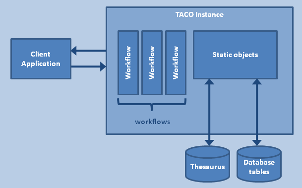

Configuration of the Elsevier Fingerprint Engine is done by means of a number of XML files, that will be discussed in general in this chapter. There are a number of aspects these XML files have in common. These will be discussed first.
All XML configuration files use XML namespaces extensively to avoid name clashes. One of those is the Extensible Application Markup Language (XAML) namespace: http://schemas.microsoft.com/winfx/2006/xaml. See MSDN for an overview of XAML.
The other ones are namespaces that refer to the various classes in the Elsevier Fingerprint Engine. They are based on the Common Language Runtime namespace mapping mechanism. These namespaces consist of two parts. One is the assembly that contains some or all of the referenced CLR namespace, the other is the class, i.e., a module providing a defined set of functionality. Namespaces that are commonly used in the configuration files are:
Note that in XML these namespaces are typically given a short name which is then used in the remainder of the XML file. In the example below the FilePrefixPair node is defined in the clr-namespace:TACO.StaticObjects;assembly=TACO.Core namespace.
<WorkflowRuntime Name="WorkflowRuntime"
xmlns:xaml="http://schemas.microsoft.com/winfx/2006/xaml"
xmlns="clr-namespace:TACO.Core;assembly=TACO.Core"
xmlns:io="clr-namespace:Collexis.Common.IO;assembly=Collexis.Common"
xmlns:s="clr-namespace:TACO.StaticObjects;assembly=TACO.Core">
<WorkflowRuntime.StaticObjects>
<NamedObjects>
<s:PrefixPair xaml:Key="Coordinations" Ordered="false" Remainder="3" >
<s:PrefixPair.DataSource>
<io:CsvData Source="{io:Text {io:File Coordinations.txt}}" Headers="Column1,Column2" Separator="," />
</s:PrefixPair.DataSource>
</s:PrefixPair>
...
</NamedObjects>
</WorkflowRuntime.StaticObjects>
</WorkflowRuntime>
The configurations involve specifying a number of different objects like activities, workflows etc. All of these objects are identified with a user-supplied identifier. For the runtime and workflow list configuration this is the Key attribute from the XAML namespace. For the workflow configuration it is the Name attribute from the XAML namespace.
A Elsevier Fingerprint Engine Instance is delivered as an IIS Service. After installing the Elsevier Fingerprint Engine, there will be an installation folder, which usually is C:\inetput\wwwroot\taco (taco stands for the instance name). In this folder we find:
| folder | contents |
|---|---|
| ..\bin | containing binaries |
| ..\config | configuration file for use with the Elsevier Fingerprint Engine program |
| ..\* | several files providing the entry to the Fingerprint Engine service |
The Elsevier Fingerprint Engine instance needs several configuration parameters, in order to be able to instantiate the right functionality.
These configuration parameters are contained in a set of Xml-style files that are stored in a single configuration root folder. During installation, under the instance root folder another folder was created with the name config. Under this folder, some sample configurations have been provided. Should the administrator wish to define his or her own Workflow Definition, e.g. myConfig, then it is recommended to copy one of the folders, e.g., config\MeSH to config\myConfig and start editing the appropriate files in that new folder. Finally, the web.config file in the instance roots needs to be adapted:
<appSettings>
<add key="TACOConfig" value="~/config/myConfig" />
</appSettings>
A Elsevier Fingerprint Engine instance consists of one or more workflows that each consist of a number of activities or processing steps. These activities need resources that may be stored in a database or files. These resources are static objects, since they do not change over the lifetime of a Fingerprint Engine instance. See the figure below.
The instance configuration as found in the config\* subfolders consists of the
Several of the Elsevier Fingerprint Engine text processing steps, such as Normalization, Thesaurus-based concept finding or Part-Of-Speech tagging, may require a large amount of data in order to perform their tasks. The data for these activities is therefore stored statically, which means that the data remains loaded throughout the lifetime of the Elsevier Fingerprint Engine instance. These data are placed in Named Objects. Named or Static objects must be configured in the service configuration. The configuration of the Named Objects is detailed in the section on Runtime Configuration.
The list of workflows and the (possibly several) desired output formats for each workflow can be configured as detailed in the section on Workflow Configuration. Each workflow can be defined individually, see Configuration of individual workflows.
In some instances, it may be required or necessary to define some configuration parameters before the Fingerprint Engine instance is loaded. The Fingerprint Engine provides a mechanism to define context variables - similar to environment variables - for the time of initializing the Fingerprint Engine.
For example, suppose that the location of a certain database is variable between servers - such that the connection string is different between server 1 and server 2. We may still want to use the exact same setup, but just change the connection string - which we know is referenced by the name of ThesaurusConnectionString.
Server1: ThesaurusConnectionString=Server=(local);Database=Thesaurus;Trusted_Connection=Yes;
Server2: ThesaurusConnectionString=Server=192.3.1.48;Database=Thesaurus;Trusted_Connection=Yes;
We may then redefine this connection string in the application configuration.
<appSettings>
<add key="TACOConfig" value="~/config/myConfig" />
<add key="ThesaurusConnectionString"
value="Server=192.3.1.48;Database=Thesaurus;Trusted_Connection=Yes;" />
</appSettings>
This definition will be picked up later in the configuration.
When all configuration files are in order, the Elsevier Fingerprint Engine Instance can be started.
Individual workflows are defined in file with the XOML Windows Workflow Markup Language format. These Workflows in the Elsevier Fingerprint Engine are sequential workflows. Sequential workflows are defined by a sequence of XOML-defined activities. Each workflow is defined in its own XOML-file, that should be given the name of the workflow at hand.
The activities are defined in a list of XOML definitions of objects. (As a technicality: these objects must all derive from TextAnalysisWorkflow. All available activities in a Elsevier Fingerprint Engine package are programmed that way.) At the moment most available Elsevier Fingerprint Engine activities are contained in the TACO.Core assembly, but activities may reside in other assemblies as well. Conveniently, all activities are located in the namespace TACO.Activities. In the header of the activity-XOML file we find the following header:
<TextAnalysisWorkflow
xmlns="clr-namespace:TACO.Core;assembly=TACO.Core"
xmlns:a="clr-namespace:TACO.Activities;assembly=TACO.Core"
xmlns:p="clr-namespace:TACO.Modules;assembly=TACO.POSTagger"
xmlns:s="clr-namespace:TACO.Core.Storage;assembly=TACO.Core"
xmlns:x="http://schemas.microsoft.com/winfx/2006/xaml"
x:Class="SampleWorkflow"
x:Name="<YOUR WORKFLOW NAME>">
Activities must read and write data from and to the datastructure that is passed through the workflow. Deleting data is not possible; modification of single annotations is possible.
The workflow configuration file contains a list of defined workflows. The Elsevier Fingerprint Engine instance embedded in the IIS Server will expose handles for each workflow defined. The URLs for each workflow are based on the default host URL as defined during the Fingerprint Engine instance installation.
The server exposes two handles for each workflow: a SOAP interface and a REST interface. The resulting URLs for a workflow as below (SampleWorkFlow) are as follows.
REST: BASEURL/WorkFlowName/TacoService.svc : http://localhost/TACO/SampleWorkflow/TacoService.svc
SOAP: BASEURL/WorkFlowName/Xml.svc : http://localhost/TACO/SampleWorkflow/Xml.svc?wsdl
The workflow configuration needs, for each workflow:
Activities must produce output annotations based on the input text and / or annotations produced by previous activities. This implies that the ordering of activities is not trivial: it is obviously not meaningful to produce a concept fingerprint (an aggregate of found terms) if the term finding activity was not executed before; it is impossible to find terms based on normalized word forms if the ‘normalize’ activity has not been executed first.
All activities (such as listed below) as implemented as software classes deriving from a base class, the TextAnalysisActivity. Each activity must define its input and output handles. For instance, the ‘normalize’ activity may specify that it requires Token annotations and needs access to the original input text and produces normal word forms; the term finding activity may specify that it needs Token and Word annotations and produces TermAnnotation annotation.
The input handles for the activities are assigned to by the workflow execution engine. The designer of a workflow does not need to know specifically what these handles are if s/he follows the instructions below; for most activities it is indicated what input is required. If one puts the activities in the right order, the input handles will be assigned correctly, implicitly.
For some activities, however, the user may need to control the input in order to achieve a specific result. For some possible use cases, the documentation of specific activities will point out how to alter or filter the input of the activity. The usual activity configuration contains the activity’s name and a definition of its attributes (in Xaml syntax). The input handles for Activities are their ‘hidden’ attributes - that one normally does not specify. For some types of input handle, the Fingerprint Engine provides functionality to specify an adapter that controls the input to an activity.
For instance, activities requiring the input of Sentences implicitly take all sentences that are present in the data structure; however, using the BlockOutTerms adapter, one specifies that only sentences, or portions of sentences that are not known as Terms should be the input to that Sentences handle. For more detail, see the section on the Block out terms adapter.
As another example, consider the aggregation of found terms in the input text. The Find Terms activity annotates all terms in the text with TermAnnotations. These term annotations can be aggregated into a Collexis fingerprint (concept vector) of the document by the Make Fingerprint activity. In the most common case, terms are searched from only one thesaurus; however, it is perfectly possible to execute the Find Terms activity twice for different thesauri, and subsequently compile two fingerprints. To make sure that each fingerprints is based on terms from one thesauri only, we need to apply a filtering adapter (SelectTerms) in order to select terms from the right thesaurus source only.
The configuration for the Elsevier Fingerprint Engine runtime is contained in a XAML file called RuntimeConfiguration.xaml. The top element in this XAML file is WorkflowRuntime. The namespaces used in the runtime configuration must refer to the Elsevier Fingerprint Engine assemblies that contain the static object types used in the configuration. Most objects reside in the TACO.Core assembly and in similarly named TACO.Core namespace. The static data objects for a Elsevier Fingerprint Engine instance are placed in Named Objects. The following XAML code snippet provides the basic structure of the Runtime configuration. It is instructive to review the sample configuration files delivered in the Elsevier Fingerprint Engine instance installation.
<WorkflowRuntime Name="WorkflowRuntime"
xmlns:xaml="http://schemas.microsoft.com/winfx/2006/xaml"
xmlns="clr-namespace:TACO.Core;assembly=TACO.Core"
xmlns:c="clr-namespace:System;assembly=mscorlib"
xmlns:m="clr-namespace:TACO.Modules;assembly=TACO.Core"
xmlns:n="clr-namespace:TACO.Normalizers;assembly=TACO.Normalizer.en"
xmlns:p="clr-namespace:TACO.POSTagger;assembly=TACO.POSTagger"
xmlns:t="clr-namespace:TACO.Tokenizers;assembly=TACO.Tokenizers"
>
<!-- static objects as a list (self-organizing by interface type) -->
<WorkflowRuntime.StaticObjects>
<NamedObjects>
<OBJECTTYPE xaml:Key="NAME" OTHERATTRIBUTE1="..." OTHERATTRIBUTE2="..." />
</NamedObjects>
</WorkflowRuntime.StaticObjects>
</WorkflowRuntime>
Named objects have types (OBJECTTYPE) that reflect their implementation in the software. Multiple named objects of the same type (for instance, a Thesaurus or Lexicon) may be instantiated at the same time but then these objects must be differentiated by name, configured in the attribute xaml:Key.
Whatever the type of the objects, what matters to the activities calling on the objects is their interface. For instance, we may instantiate wordsets from a database table or from a file; a database wordset will be instantiated from a database table and a file wordset may be instantiated from a file, this does not matter to the activity that requires any wordset compliant with the IWordSet interface.
The Elsevier Fingerprint Engine runtime detects the relevant interfaces of Static Objects and will group these objects automatically. Static objects are organized pools containing objects with the same interface. Static objects are persistent and constant throughout the lifetime of a runtime. Since static objects are organized per interface type; each single static object must have a Key that is unique to the static object with that interface type, i.e. in its pool of similar static objects. Other static objects and activities can query the static objects by this Key.
See the static objects section for a more detailed description of the currently available static objects.